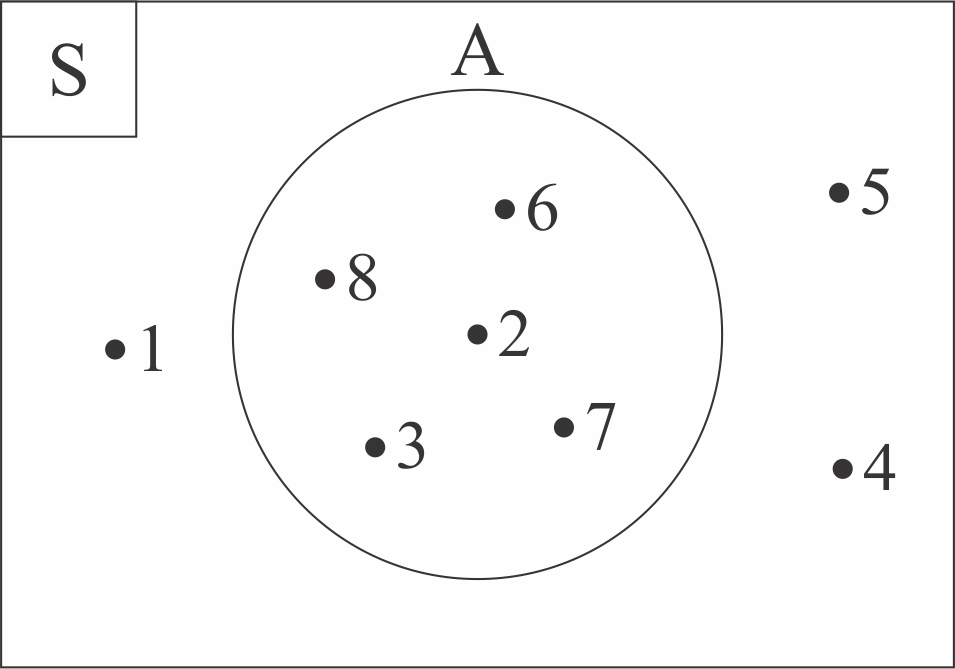

PENGERTIAN DIAGRAM VENN

Tadi, kalian sudah belajar bagaimana menggambar diagram venn. Kemudian, bagaimana cara membaca diagram venn? Perhatikan contoh di bawah ini!
Jika diberikan diagram venn sebagai berikut.
Pembahasan :
Pembahasan :
- Untuk menentukan himpunan B, yang kita lihat adalah lingkaran B saja. Di dalam lingkaran B terdapat j, k, l, q, dan r. Sehingga didapatkan B = {j, k, l, q, r}
- Untuk menentukan himpunan semesta, yang kita lihat adalah keseluruhan termasuk lingkaran B. Sehingga didapatkan S = {j, k, l, m, n, o, p, q, r}

Cobalah jawab soal di bawah ini!
 Petunjuk (klik untuk menyembunyikan pertunjuk)
Petunjuk (klik untuk menyembunyikan pertunjuk)- Isilah kotak jawaban dengan jawaban yang tepat.
- Setelah menjawab soal, tekan tombol "Cek Jawaban"
- Jika jawaban kamu benar, maka akan muncul icon

- Jika jawaban kamu salah, maka akan muncul icon dan tombol "Ulang"
- Tekan tombol "Ulang" untuk mengulang menjawab soal
- Soal selanjutnya akan muncul jika jawaban kamu benar.
Diberikan diagram venn sebagai berikut.

Berdasarkan diagram venn di atas, tentukanlah himpunan semesta dan himpunan G! Nyatakanlah dengan metode tabulasi!
Pembahasan
Jawaban Kamu Benar.
Berdasarkan diagram venn yang diberikan pada soal, didapatkan :
| Himpunan Semesta |
|---|
|
= { }
|
| Himpunan G |
|---|
|
= { }
|
-
Himpunan Semesta
S = {1, 2, 3, 4, 5, 6, 7, 8} -
Himpunan G
G = {2, 3, 6, 7, 8}